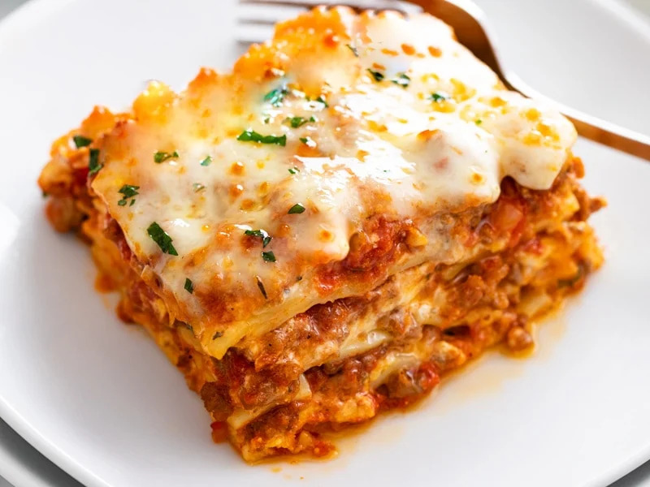

Lasagne

Description
You know the feeling: Your energy is running low, your family's hunger is running high, and dinner should have been on the table an hour ago. That's when you reach for this easy lasagna recipe.
For those nights when you're lacking in time and motivation, pull out this no-fail recipe. It'll save the day—or night. This recipe has everything you expect in a classic lasagna: ground beef, tomatoes, noodles, and a delicious selection of cheeses (mozzarella, cottage cheese or ricotta, and Parmesan). But the method is where this recipe stands above others.
We tasked our recipe pros with finding ingredients and shortcuts that cut down on the work of putting this lasagna together but don't sacrifice any of the flavor. Browning the ground beef, perhaps the longest task besides baking, takes just 5 to 7 minutes. Once all the sauce ingredients are added to the beef, you'll only need to simmer a few minutes, not hours like the typical lasagna recipe.
Ingredients
- Ground beef: We like using ground beef for this recipe, but you could substitute in ground turkey if it's what you have or like. Even ground venison would be nice if you have some in the freezer.
- Canned tomatoes: Don't bother stewing your own; the tomatoes in the can are plenty good enough. If you have one of those 28-ounce cans of whole tomatoes, use it instead of the two smaller cans in the ingredients list. Just grab your kitchen shears, and chop up those tomatoes into nice 1/4-inch pieces.
- Sauce ingredients: Making the sauce for this easy lasagna recipe is actually quite simple and fast. To the ground beef, we'll add tomato paste, a few classic spices like Italian seasoning and garlic powder, and crushed red pepper flakes for just a hint of heat.
- No-boil noodles: If you have the regular lasagna noodles on hand and want to use them up, by all means boil some water, and pop those sheets of noodle in to cook. But to save time, we like the no-boil noodles which will tenderize while the rest of the dish bakes.
- Cheeses: We have a trio (or quartet if you're creative) of cheeses that truly lift this dish beyond basic. First, the shredded mozzarella, ricotta or cottage cheese, and Parmesan cheese are spooned between the layers of pasta and sauce. Then, a final layer of fresh mozzarella slices is added just before the dish goes into the oven.